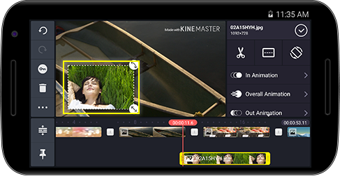
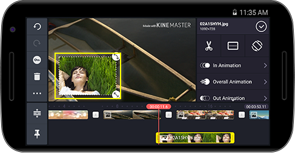

, чтобы открыть браузер мультимедиа (видео) и выберите нужное видео для добавления в качестве слоя.
, чтобы открыть браузер мультимедиа (видео) и выберите нужное видео для добавления в качестве слоя.Нажмите  и затем , чтобы открыть браузер мультимедиа (видео) и выберите нужное видео для добавления в качестве слоя.
и затем , чтобы открыть браузер мультимедиа (видео) и выберите нужное видео для добавления в качестве слоя.


Нажмите  затем нажмите
затем нажмите  , чтобы открыть браузер мультимедиа (изображение) и выберите файл для добавления в качестве слоя.
, чтобы открыть браузер мультимедиа (изображение) и выберите файл для добавления в качестве слоя.
 

Нажмите  , а затем нажмите
, а затем нажмите  , чтобы выбрать наклейки, которые нужно добавить.
, чтобы выбрать наклейки, которые нужно добавить.


Нажмите  затем нажмите , чтобы ввести нужный текст, который нужно добавить к слою.
затем нажмите , чтобы ввести нужный текст, который нужно добавить к слою.


Нажмите  , а затем нажмите
, а затем нажмите  , чтобы написать или нарисовать на слое.
, чтобы написать или нарисовать на слое.


После создания слоя с помощью  , нажмите на вкладку
, нажмите на вкладку  и установите нужные параметры.
и установите нужные параметры.